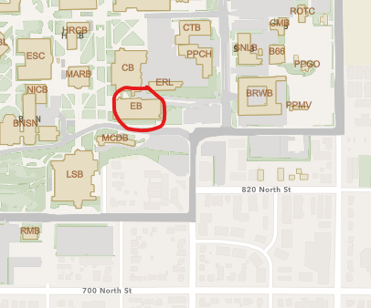
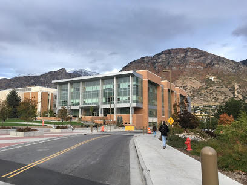

Frequently Asked Questions
Q: Where do I park? (See map below the
answers.)
A1:BYU has agreed to not enforce parking in lots 4A, 5A and 6A on
the day of the conference (click
here for map or use links below). In addition, BYU police are
going to reserve 20 parking stalls in lot 4A for conference
attendees. If you are not one of the first 20 conference attendees
to claim one of these stalls you will need to find another open spot
in either lots 4A, 5A or 6A. If all the parking stalls are filled in
lots 4A, 5A and 6A you will need to park in visitor parking (answers
2 &3 below). Those 20 stalls will be marked by having a traffic
cone in the spot, just move the cone to the front of the spot and
park there. First come, first to get the primo spot. If you need
special handicap accommodation please email
Jaron
Hansen.
A2: Location of regular free visitor parking lot located closest to the Air Quality Conference (Engineering Building) at BYU. 40°14'53.9"N 111°38'39.1"W 40.248297, -111.644195
It is a 5-10 min. walk from this lot to the Engineering Building. If this lot is full you will need to park in the free visitor lot located farthest away from the Engineering Building. Both visitor parking lots are controlled by a parking official. Pull up to the parking booth and tell the parking official you are a visitor. You will be allowed to park for free for the entire day.
A3: Location of 2nd free visitor parking lot is farther away from the Air Quality Conference (Engineering Building) at BYU. 40°15'08.1"N 111°38'54.0"W 40.252260, -111.648345
The walk from this lot to the Engineering Building is 10-15 minutes.
Q: How do I get there?
A: Since this is an air quality conference, we'd love for you to
take mass transit. Take the FrontRunner to Provo Station then take
either bus 822 or Trax UVX.
Bus details: South Utah County-BYU-UVUY Limited bus. This express bus stops at the BYU South Campus Station.
The details for Trax light rail: Board at Provo Station then disembark 6 stations later at the "BYU South Campus Station." From there it is about a 2 minute walk to the Engineering Building.

Click on the map for a larger version that will open in a new tab.
Directions and Maps
From locations north of Provo:
- Take I-15 south to Exit 269; exit I-15 to go east on University Parkway.
- Keep left at the fork and go east on University Parkway.
- Follow University Parkway East for about 4 miles, through multiple traffic signals. At University Parkway and Canyon Road, you will see LaVell Edwards Stadium on the Northeast corner.
- Continue about 1 mile straight on University Parkway past the stadium, up the hill to the traffic signal at 900 East. Turn right (south) onto 900 East.
- Drive south to the second traffic signal; turn right (west) onto Campus Lane (1100 N).
- Take the first left (south) to get to the visitor parking lot located closest to the conference site.
From locations south of Provo:
- Take I-15 north to Exit 263 University Avenue.
- Continue north on University Avenue about 2 miles to Provo Center Street.
- Turn right (east) onto Center Street; continue straight through the traffic circle (roundabout).
- Turn left (north) onto 900 East, continue north about one mile to Campus Lane (1100 N).
- Turn left (west) onto Campus Lane. Take the first left to get to the visitor parking lot located closest to the conference site.
From the Parking Lot to the Engineering Department:
- Follow directions on map above to reach west entrance of the new Engineering Building (it is directly south of the Clyde Building).
- Enter west doors (2nd floor) and you will see the Registration desk for the conference.
Brigham Young University maps:
General Campus Map: https://map.byu.edu/
Parking specific: https://map.byu.edu/?layer=parking
Look for the EB building near the bottom right of the BYU map.

Engineering Building: 
The conference will be held in BYU's beautiful new Engineering Building.
Q: What's up for lunch?
A: Everyone who registers will get a box lunch to enjoy while
looking at the posters. We will have a mix of lunch types, including
vegetarian. Please try to be flexible
with your choice of meals as we are just guessing at the selection
quantity breakdowns.
Q: Will there be coffee????
A: YES!! We have coordinated with BYU and an outside caterer to
provide coffee and tea with the snacks at the breaks.
Q: Why are Zoom registrations required
to pay a registration fee?
A: It is twenty bucks. At such a low amount it is too much work for
the small organizing committee to deal with the additional workload
of separating out different registration levels. Adding the Zoom
option is already additional workload. It is a face-to-face
conference that is adhering to all CDC and local health
requirements. We do strongly encourage the use of masks by everyone.
We believe that this will be a safe environment and we encourage you
to attend in person. We'll have a name tag for you and look forward
to seeing you.
Q: Are masks required?
A: We will need to follow the onsite requirements at the time. Here
is a
link to BYU's COVID protocols for events. As none of us knows
the health status of the person sitting next to you, we feel that
the polite and responsible thing to do is wear a mask. If you are
experiencing COVID or any respiratory symptoms, please use the Zoom
link that will be sent to all registered participants just before
the conference starts.
Q: When will we get the Zoom link?
A: All registered participants will get the Zoom link via email just
prior to the start of the conference. Since everyone is required to
pay a registration fee, we ask that you don't share this link with
others. Thank you.